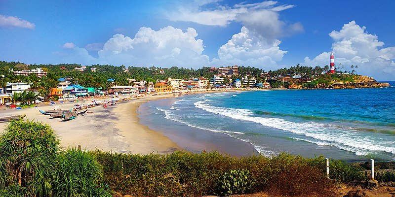

Lighthouse Beach
See the landmark headland and the curve of the shore. Check current opening hours before visiting the lighthouse.

KERALA FIELD NOTES · 06 / 06
Follow the curve of the coast.
LIGHTHOUSE, BEACHES & SEA BREEZESTHIRUVANANTHAPURAM COAST
A lighthouse headland, crescent-shaped beaches and palm-lined views over the Arabian Sea.
Kovalam’s coastline curves around rocky headlands into sheltered-looking bays. The red-and-white lighthouse rises above the palms, while fishing boats and beachside paths add colour along the shore. The sea changes from bright blue to silver as the light shifts.

THE STORIES BENEATH THE SCENERY
Kovalam was a coastal fishing settlement before it became widely known as a visitor destination during the twentieth century. Its growing reputation was linked to the Travancore royal family’s association with the area and, later, international travel. Fishing communities remain part of the coast’s living identity.
More background on Kovalam →LOOK A LITTLE CLOSER
See the landmark headland and the curve of the shore. Check current opening hours before visiting the lighthouse.
Take in sea views from public paths, pausing to watch the changing light and the boats along the coast.
Learn about the area’s fishing traditions and how the coast shapes everyday life.
A FEW FRAMES FROM KOVALAM
BEFORE YOU GO
November to February is generally comfortable. Monsoon weather can bring rough seas and restrictions on water activities.
Follow lifeguard instructions and warning flags. Do not assume a sheltered-looking bay is safe for swimming.
CURIOUS ABOUT KOVALAM?
Ask your local guide about the places that interest you.
Contact your guide →THERE’S MORE TO DISCOVER

Chinese fishing nets, old trading streets and a waterfront shaped by centuries of exchange.
Discover Kochi
A lakeside landscape of coconut palms, village waterways and birdlife around Vembanad.
Discover Kumarakom
Palm-lined canals, traditional houseboats and everyday life woven around the backwaters.
Discover Alleppey